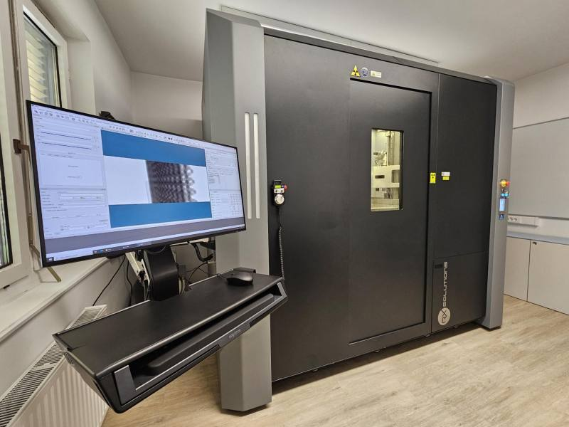
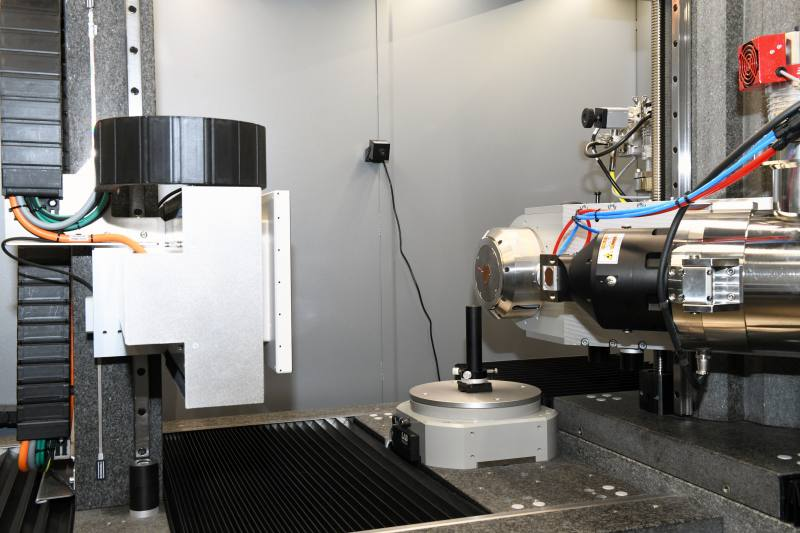
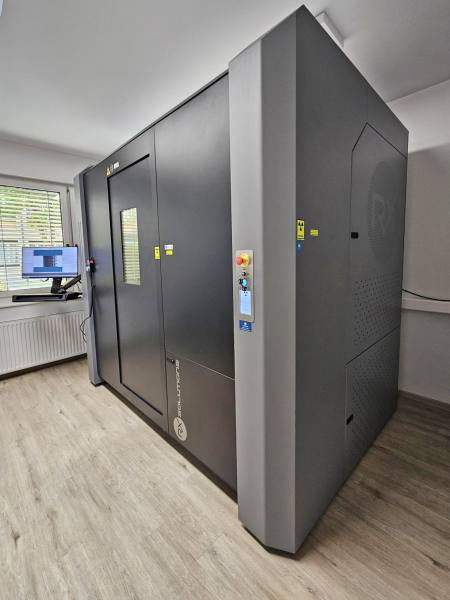

Our imaging and data processing facilities provide advanced tools for non-destructive characterization of materials and structures, from large engineering components to fine-scale microstructures.
3DXIM provides access to advanced laboratory X-ray computed tomography systems covering a broad range of sample sizes, spatial resolutions, experimental conditions, and acquisition modalities.
The EasyTOM XL 160/230 Ultra (RX Solutions, France) is a versatile high-performance X-ray CT system equipped with two open X-ray sources: a nanofocus source for high-resolution imaging and a microfocus source for high-energy and high-power applications.



The system combines two open X-ray sources with two detectors: a large-area 16-bit flat-panel detector and a 14-bit CCD camera. Depending on the configuration, the scanning volume ranges from sub-millimetre dimensions up to 520 mm in diameter and 650 mm in height.
The system accommodates samples up to 80 kg, 730 mm in diameter, and 940 mm in height. The large walk-in cabinet allows the integration of different X-ray sources, detectors, and experimental setups.
A Meca500 six-axis robotic arm (Mecademic Robotics, Canada) enables automated sample handling and positioning, including complex geometrical configurations.
The system supports a wide range of in situ and operando experiments (4DCT), including environmental and mechanical testing, using dedicated add-on modules. These configurations allow experiments without restricting sample movement due to electrical connections or tubing.
Native X-Act software (RX Solutions) supports advanced acquisition and reconstruction modalities, including helical CT, laminography, propagation-based phase-contrast imaging, mosaic CT, and dynamic CT.
The microXCT400 (Xradia) provides high-resolution laboratory X-ray computed tomography for detailed three-dimensional characterization of materials and microstructures.
Interchangeable objectives provide spatial resolutions down to 0.6 µm, depending on the material, sample size, and imaging configuration.
Using a macro objective, samples can be imaged over a 17–50 mm field of view with resolutions of approximately 20–50 µm. At 40× magnification, the field of view is approximately 0.7 mm, with a spatial resolution of around 1 µm.
Multiple imaging configurations allow characterization of samples larger than 50 mm while retaining detailed information at the microscale.
The microXCT400 can also be combined with an environmental chamber for controlled in situ experiments between −20 and 140 °C, together with tensile or compressive loads of up to 500 N. This enables investigation of structural and microstructural changes under controlled environmental and mechanical conditions.
Our X-ray CT systems support different acquisition and imaging approaches, enabling the visualization and quantitative analysis of structures under a wide range of experimental conditions.
Three-dimensional X-ray attenuation imaging for non-destructive characterization of internal structures and material phases.
Enhanced sensitivity to interfaces and low-density features using propagation-based phase-contrast imaging.
Continuous helical acquisition for imaging extended samples and volumes beyond conventional field-of-view limitations.
Imaging of flat, plate-like, or laterally extended samples where conventional CT geometries are not optimal.
Combining multiple adjacent scans to characterize samples larger than the available detector field of view.
Time-resolved imaging for studying structural evolution during mechanical, thermal, environmental, or other in situ experiments.
Imaging is complemented by advanced reconstruction, processing, segmentation, visualization, and quantitative analysis workflows. Our facilities support the transformation of large tomographic datasets into quantitative three-dimensional information.
Reconstruction of tomographic datasets using advanced analytical and iterative approaches, including optimization of acquisition and reconstruction parameters.
Manual, semi-automatic, and machine-learning-based segmentation of complex multiphase materials and microstructures.
Quantification of porosity, pore structure, particle morphology, connectivity, interfaces, dimensions, and other structural descriptors.
Interactive visualization and interpretation of reconstructed three-dimensional datasets for scientific analysis and communication.
Our workflows combine specialized commercial and open-source software for image reconstruction, processing, segmentation, visualization, and quantitative analysis.
The laboratory is supported by computational resources for the processing of large volumetric datasets, high-resolution reconstructions, segmentation, and quantitative 3D analysis.
Our imaging and data processing facilities at ZAG are available to support your scientific work, from experimental design and image acquisition to reconstruction, segmentation, visualization, and quantitative analysis.